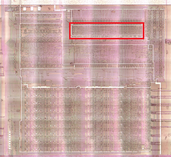
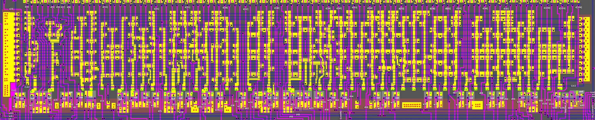
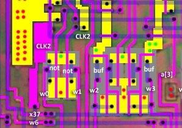
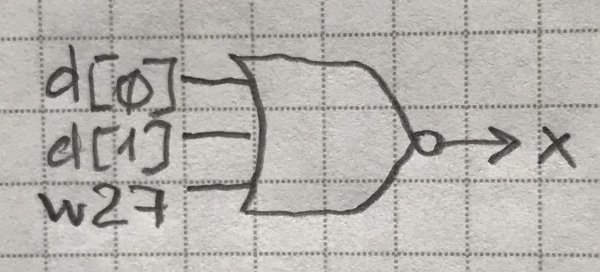

Decoder2

Refines the decoded operation code and reduces the total number of outputs for Decoder3. Implemented as densely packed NOR trees.

Decoder2 Inputs
The outputs d[106:0] from Decoder1 are input.
Decoder2 Output Drivers
Some drivers are inverters and some are buffers.

The output drivers act as signal amplifiers and are also used as "domino" logic, to translate dynamic CMOS logic into conventional logic.
Decoder2 Outputs
The inputs from Decoder1 have three paths:
- Stay inside Decoder2 and form one of Decoder2's outputs with the rest of the signals
- Go outside
- Stay inside AND go outside
All Decoder2 outputs are clocked by the CLK2 signal.
| Output | Name | To | Description |
|---|---|---|---|
| w0 | |||
| w1 | Bottom | TempLow/TempHigh to cbus/dbus | |
| w2 | Bottom | TempLow/TempHigh to cbus/dbus | |
| w3 | ALU, Bottom | A to abus | |
| w4 | |||
| w5 | |||
| w6 | WR | External, Thingy | To external WR port |
| w7 | nIR7 | Not connected | Not used |
| w8 | Bottom, Thingy | PCL/PCH to abus/dbus | |
| w9 | ALU, Bottom | SPH to abus; Also bc/bq Logic | |
| w10 | ALU | ||
| w11 | Sequencer (only) | ||
| w12 | ALU | ||
| w13 | |||
| w14 | |||
| w15 | ALU, Bottom | SPL to bbus (only if IR4=IR5=1); Set abus to 0 | |
| w16 | |||
| w17 | Bottom | TempLow/0 to cbus/dbus | |
| w18 | Sequencer | ||
| w19 | ALU, Bottom | SPH to bbus (only if IR4=IR5=1); H to abus | |
| w20 | Sequencer (only) | ||
| w21 | Bottom | bc/bq Logic | |
| w22 | |||
| w23 | Bottom | SPL to abus | |
| w24 | |||
| w25 | Bottom | PCL/PCH to cbus/dbus | |
| w26 | LoadIR | Bottom, Sequencer, External | DL to IR |
| w27 | |||
| w28 | Bottom | PCH to DL | |
| w29 | Bottom | Set dbus to 0 | |
| w30 | |||
| w31 | Thingy (only) | ||
| w32 | Sequencer (only) | ||
| w33 | Sequencer (only) | ||
| w34 | Bottom (only) | PCL to DL | |
| w35 | Thingy (only) | ||
| w36 | Bottom | zbus/wbus to PCL/PCH | |
| w37 | ALU | ||
| w38 | |||
| w39 | |||
| w40 | Sequencer |
(If wx signal goes to Decoder3 it is not indicated in the table).
Nor Trees
| Tree | Gekkio | Paths | Output Driver |
|---|---|---|---|
| w0 | cc_check | {4,5,6,7} | not |
| w1 | oe_wzreg_to_idu | {0,1,w27} | not |
| w2 | op_jr_any_sx10 | Does not use NOR tree | d[103] |
| w3 | op_alu8 | Does not use NOR tree | d[3] |
| w4 | op_ld_abs_a_data_cycle | {0,28} | not |
| w5 | op_ld_a_abs_data_cycle | {2,26} | not |
| w6 | wr | {0,12,13,24,28,30,32,38,47,50,56,60,66,68,70,73,75,92,93,97} | not |
| w7 | ignored | Does not use NOR tree | ~IR[7]. :warning: Not used (not connected). |
| w8 | op_jr_any_sx01 | Does not use NOR tree | d[19] |
| w9 | op_sp_e_sx10 | {21,22} | not |
| w10 | alu_res | {23,24} | not |
| w11 | addr_valid | {32,59,0,1,2,9,10,12,13,15,16,17,18,20,22,23,24,26,28,29,30,31,33,34,38,40,43,44,46,47,50,51,52,55,56,57,58,60,61,63,64,65,66,67,68,69,70,71,72,73,75,78,79,80,81,82,86,87,88,89,90,91,92,93,94,95,96,97,99,100,101,102,103,104,105} | not |
| w12 | cb_bit | Does not use NOR tree | d[27] |
| w13 | op_ld_abs_rr_sx00 | {28,29} | not |
| w14 | op_ldh_any_a_data_cycle | {30,32} | not |
| w15 | op_add_hl_sxx0 | Does not use NOR tree | d[35] |
| w16 | op_incdec_rr | {36,37} | not |
| w17 | op_ldh_imm_sx01 | {32,59} | not |
| w18 | data_fetch_cycle | {1,9,10,15,20,29,31,33,43,44,51,52,57,59,61,63,65,67,69,71,72,79,80,82,86,87,90,91,95,104,105} | not |
| w19 | op_add_hl_sx01 | Does not use NOR tree | d[46] |
| w20 | state0_next | {0,1,6,9,11,13,15,20,21,24,28,29,30,31,32,35,36,37,39,43,45,47,50,51,56,57,60,61,62,63,65,66,68,69,70,72,74,76,82,83,86,92,93,95,97,104} | not |
| w21 | op_push_sx10 | Does not use NOR tree | d[50] |
| w22 | addr_hl | {24,33,47,56,57,62,68,69,70,81,90,95,97} | not |
| w23 | op_sp_e_s001 | {53,54} | not |
| w24 | alu_set | {55,56} | not |
| w25 | addr_pc | {2,9,10,15,16,17,18,20,22,23,26,31,34,40,43,44,46,55,58,61,63,64,65,67,72,77,78,86,87,88,89,91,94,96,99,100,101,102,104,105} | not |
| w26 | m1 | {2,16,17,18,22,23,26,34,40,46,55,58,64,78,81,88,89,94,96,99,100,101,102,103} | not |
| w27 | op_ld_nn_sp_s01x | {60,66} | not |
| w28 | oe_pchreg_to_pbus | {12,73,75} | not |
| w29 | op_ldh_c_sx00 | {30,71} | not |
| w30 | stackop | {11,12,13,38,39,50,51,52,73,74,75,76,79,80,82,92,93} | not |
| w31 | idu_inc | {2,9,10,15,16,17,18,20,22,23,26,31,34,37,40,43,44,46,51,52,55,58,60,61,63,64,65,67,72,78,79,80,81,82,84,86,87,88,89,91,94,96,99,101,102,103,104,105} | not |
| w32 | state2_next | {0,12,13,24,28,30,32,33,36,37,45,47,50,56,59,62,66,68,70,71,75,76,77,83,90,91,92,93,97} | not |
| w33 | state1_next | {0,1,10,11,13,19,21,24,28,30,32,33,36,37,38,44,45,47,50,52,53,54,56,59,60,62,66,67,68,70,71,73,75,79,80,82,83,87,90,91,92,93,97,105} | not |
| w34 | oe_pclreg_to_pbus | {13,92,93} | not |
| w35 | idu_dec | {11,12,36,38,39,73,74,75,76,77,85} | not |
| w36 | oe_wzreg_to_pcreg | {13,45,83} | not |
| w37 | op_incdec8 | Does not use NOR tree | d[98] |
| w38 | allow_r8_write | {2,13,16,17,22,23,26,28,29,34,35,36,37,38,40,45,46,50,53,54,55,58,62,68,70,78,81,88,89,92,93,94,96,97,99,100,101} | not |
| w39 | out of scope | Does not use NOR tree | ~SeqOut_2 |
| w40 | out of scope | Does not use NOR tree | w[18] & w[39] |
The numbers in the path refer to Decoder1 outputs d[106:0]. Sometimes there are other inputs in the tree, and they are marked that way.
The result is a multi-input NOR (the dynamic part is not shown in the picture):

To convert trees into a schematic, you can use a script to generate an HDL.